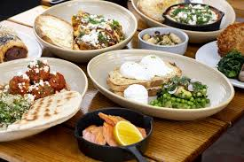
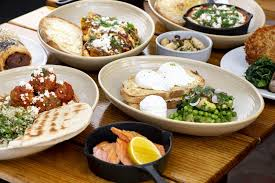
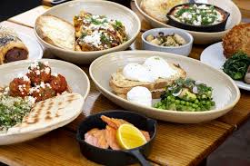

Our Café
Enjoy a relaxing meal or snack in our cozy café, where all the food is made with locally sourced ingredients.
Menu
 

Come and visit us for a relaxing break with delicious food and drinks!
Enjoy a relaxing meal or snack in our cozy café, where all the food is made with locally sourced ingredients.

Come and visit us for a relaxing break with delicious food and drinks!